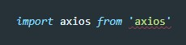
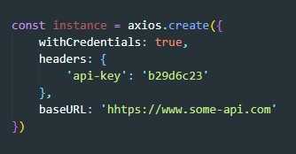
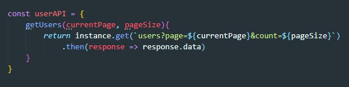
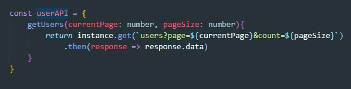
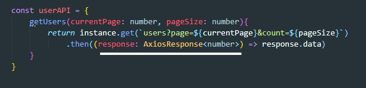
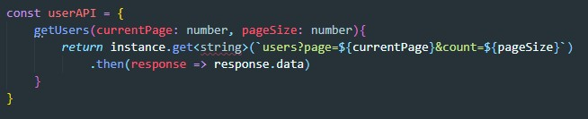
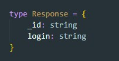
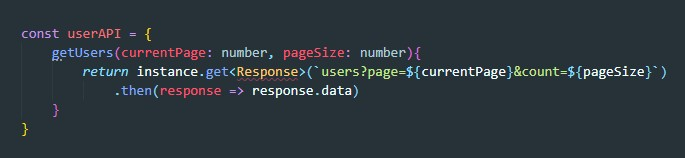

1 Библиотека axios сама по себе уже типизирована. Что бы типизация заработало нам нужно поправить import. Он должен выглядеть вот так:
2 Пример типизации
Допустим мы создали экземпляр axios
Далее создаем объект с методами обращения к API
Здесь все просто с помощью axios мы обращаемся к урлу в ответ получаем Promise/ Через метод then мы получаем data и возвращаем его
Сначала типизируем входные параметры метода getUsers
Теперь нужно типизировать response. В axios уже есть тип для response AxiosResponse<any>. Вместо any мы можем подставить свой тип. Допустим с сервера придет число. Тогда запись будет выглядеть так:
Но есть и второй способ проще типизировать response. Дело в том что в axios все методы (get, post и т.д.) являются Generics. Поэтому тип возвращаемого объекта мы можем описать вот так:
Если же мы опишем свой тип пришедших от сервера данных, то затем мы можем указать и его
 